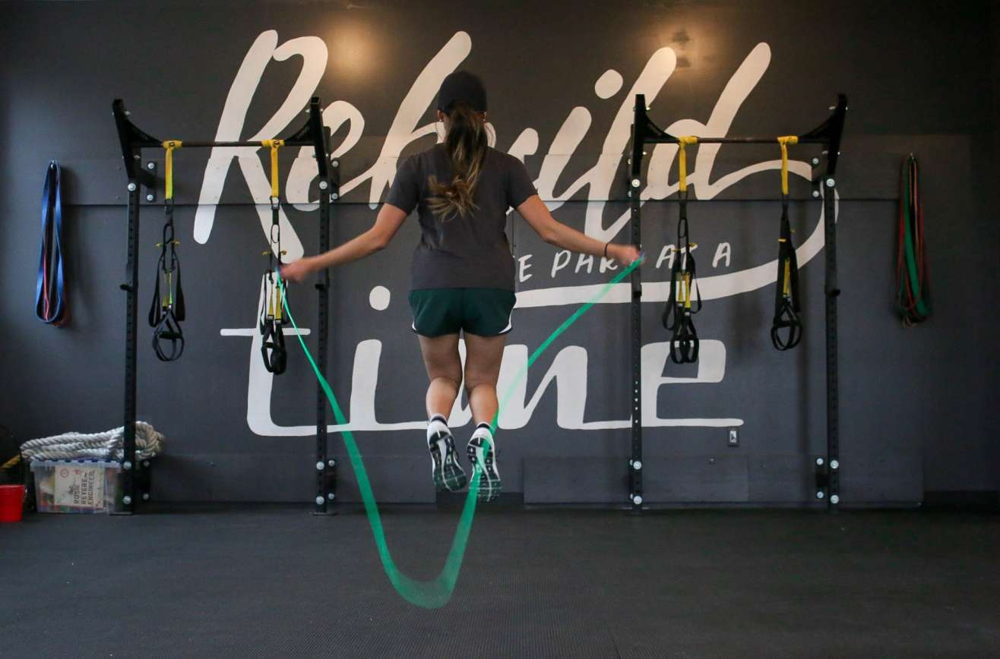
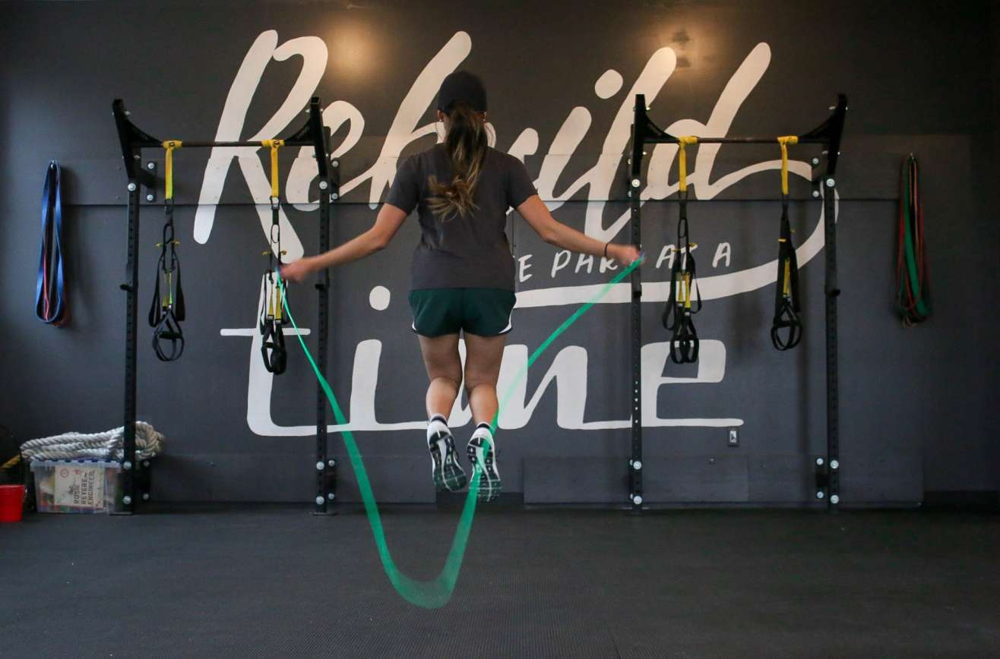

The Mental Health Benefits of Exercise
'Y'ou already know that exercise is good for your body. But did you know it can also boost your mood, improve your sleep, and help you deal with depression, anxiety, stress, and more?
What are the mental health benefits of exercise?
Exercise is not just about aerobic capacity and muscle size. Sure, exercise can improve your physical health and your physique, trim your waistline, improve your sex life, and even add years to your life. But that’s not what motivates most people to stay active. People who exercise regularly tend to do so because it gives them an enormous sense of well-being. They feel more energetic throughout the day, sleep better at night, have sharper memories, and feel more relaxed and positive about themselves and their lives. And it’s also a powerful medicine for many common mental health challenges. Regular exercise can have a profoundly positive impact on depression, anxiety, and ADHD. It also relieves stress, improves memory, helps you sleep better, and boosts your overall mood. And you don’t have to be a fitness fanatic to reap the benefits. Research indicates that modest amounts of exercise can make a real difference. No matter your age or fitness level, you can learn to use exercise as a powerful tool to deal with mental health problems, improve your energy and outlook, and get more out of life.
Exercise and depression
Studies show that exercise can treat mild to moderate depression as effectively as antidepressant medication—but without the side-effects, of course. As one example, a recent study done by the Harvard T.H. Chan School of Public Health found that running for 15 minutes a day or walking for an hour reduces the risk of major depression by 26%. In addition to relieving depression symptoms, research also shows that maintaining an exercise schedule can prevent you from relapsing. Exercise is a powerful depression fighter for several reasons. Most importantly, it promotes all kinds of changes in the brain, including neural growth, reduced inflammation, and new activity patterns that promote feelings of calm and well-being. It also releases endorphins, powerful chemicals in your brain that energize your spirits and make you feel good. Finally, exercise can also serve as a distraction, allowing you to find some quiet time to break out of the cycle of negative thoughts that feed depression.
3. It might make you age slower.
Exercise has been shown to lengthen lifespan by as much as five years. A small new study suggests that moderate-intensity exercise may slow down the aging of cells. As humans get older and their cells divide over and over again, their telomeres—the protective caps on the end of chromosomes—get shorter. To see how exercise affects telomeres, researchers took a muscle biopsy and blood samples from 10 healthy people before and after a 45-minute ride on a stationary bicycle. They found that exercise increased levels of a molecule that protects telomeres, ultimately slowing how quickly they shorten over time. Exercise, then, appears to slow aging at the cellular level.
Exercise and anxiety
Exercise is a natural and effective anti-anxiety treatment. It relieves tension and stress, boosts physical and mental energy, and enhances well-being through the release of endorphins. Anything that gets you moving can help, but you’ll get a bigger benefit if you pay attention instead of zoning out. Try to notice the sensation of your feet hitting the ground, for example, or the rhythm of your breathing, or the feeling of the wind on your skin. By adding this mindfulness element—really focusing on your body and how it feels as you exercise—you’ll not only improve your physical condition faster, but you may also be able to interrupt the flow of constant worries running through your head.
Exercise and stress
Ever noticed how your body feels when you’re under stress? Your muscles may be tense, especially in your face, neck, and shoulders, leaving you with back or neck pain, or painful headaches. You may feel a tightness in your chest, a pounding pulse, or muscle cramps. You may also experience problems such as insomnia, heartburn, stomachache, diarrhea, or frequent urination. The worry and discomfort of all these physical symptoms can in turn lead to even more stress, creating a vicious cycle between your mind and body. Exercising is an effective way to break this cycle. As well as releasing endorphins in the brain, physical activity helps to relax the muscles and relieve tension in the body. Since the body and mind are so closely linked, when your body feels better so, too, will your mind.
Exercise and ADHD
Exercising regularly is one of the easiest and most effective ways to reduce the symptoms of ADHD and improve concentration, motivation, memory, and mood. Physical activity immediately boosts the brain’s dopamine, norepinephrine, and serotonin levels—all of which affect focus and attention. In this way, exercise works in much the same way as ADHD medications such as Ritalin and Adderall.
7. Your fat cells will shrink.
The body uses both carbohydrates and fats as energy sources. But after consistent aerobic exercise training, the body gets better at burning fat, which requires a lot of oxygen to convert it into energy. “One of the benefits of exercise training is that our cardiovascular system gets stronger and better at delivering oxygen, so we are able to metabolize more fat as an energy source,” Hackney says. As a result, your fat cells—which produce the substances responsible for chronic low-grade inflammation—shrink, and so does inflammation.
Exercise and PTSD and trauma
Evidence suggests that by really focusing on your body and how it feels as you exercise, you can actually help your nervous system become “unstuck” and begin to move out of the immobilization stress response that characterizes PTSD or trauma. Instead of allowing your mind to wander, pay close attention to the physical sensations in your joints and muscles, even your insides as your body moves. Exercises that involve cross movement and that engage both arms and legs—such as walking (especially in sand), running, swimming, weight training, or dancing—are some of your best choices. Outdoor activities like hiking, sailing, mountain biking, rock climbing, whitewater rafting, and skiing (downhill and cross-country) have also been shown to reduce the symptoms of PTSD.
People Also Read:
 

Fitness Advice That Doesn't Work
‘Ignore bad fitness advice to make the most out of your time at the gym.”
7 Surprising Benefits of Exercise
‘'Y'ou probably have a vague sense that exercise is good for you—and you’ve probably heard that it’s “healthy for the heart.”’
Why Exercise Is Wise
You've probably heard countless times how exercise is "good for you." But did you know that it can help you feel good too?’
Bite-sized exercise breaks
Exercise snacking differs from HIIT in both the duration of the activity burst and the time in between.’